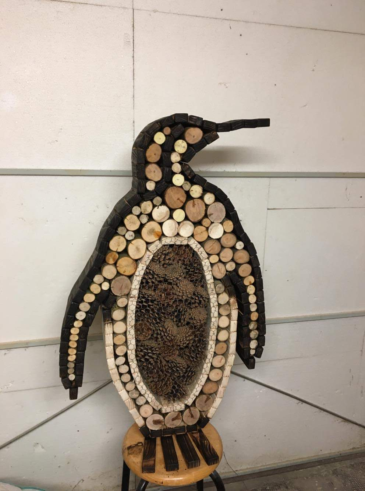
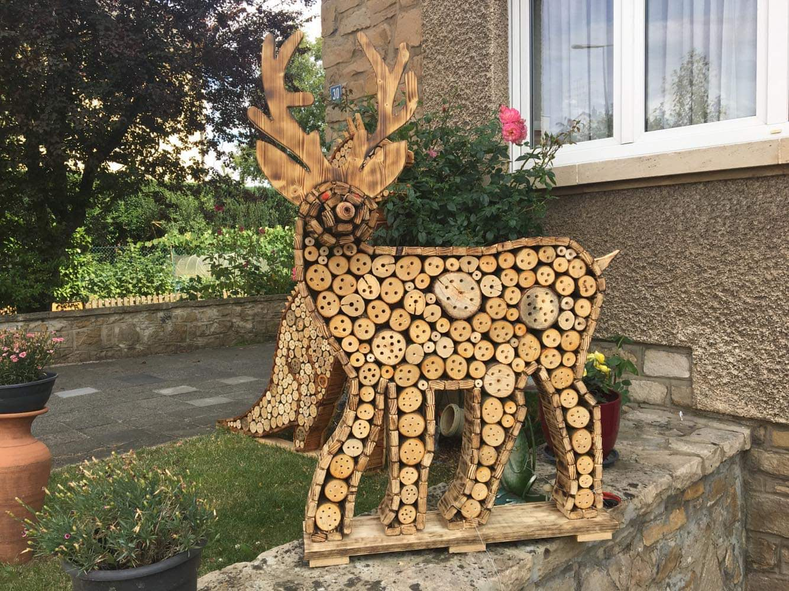
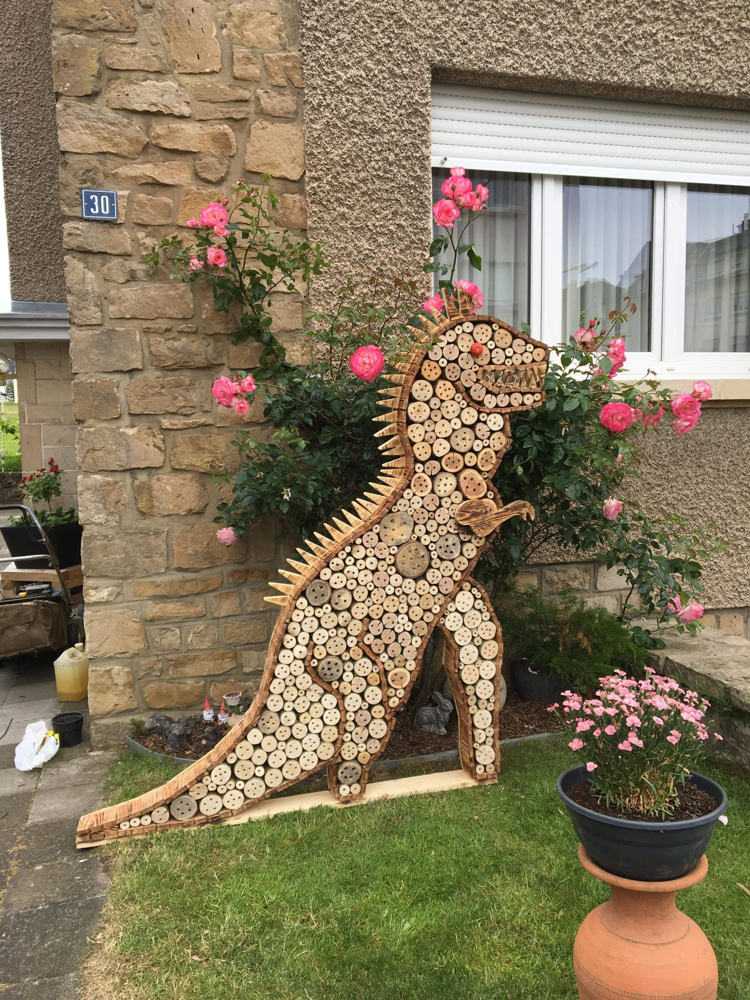
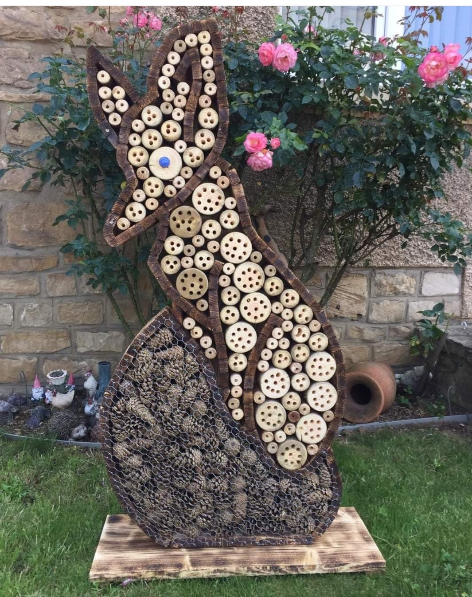
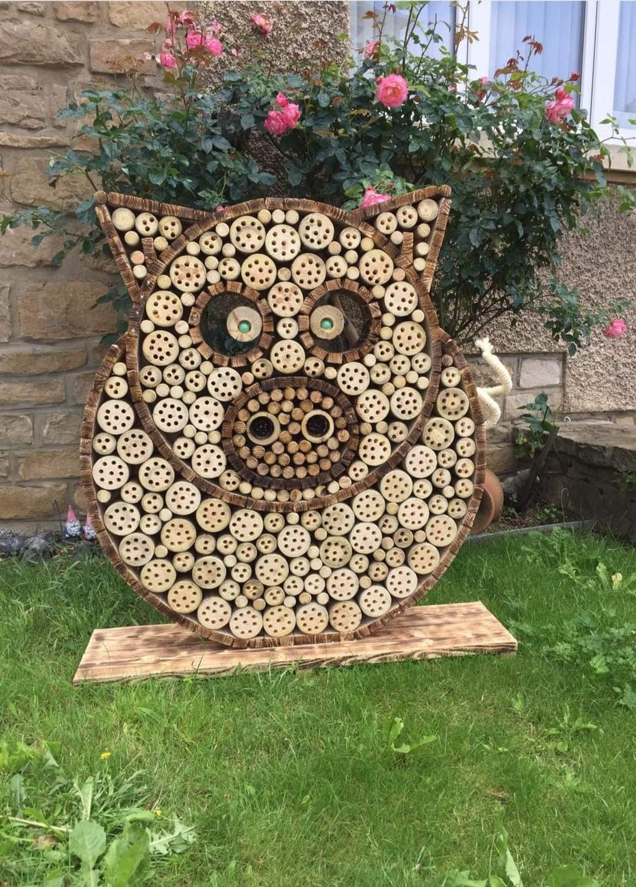
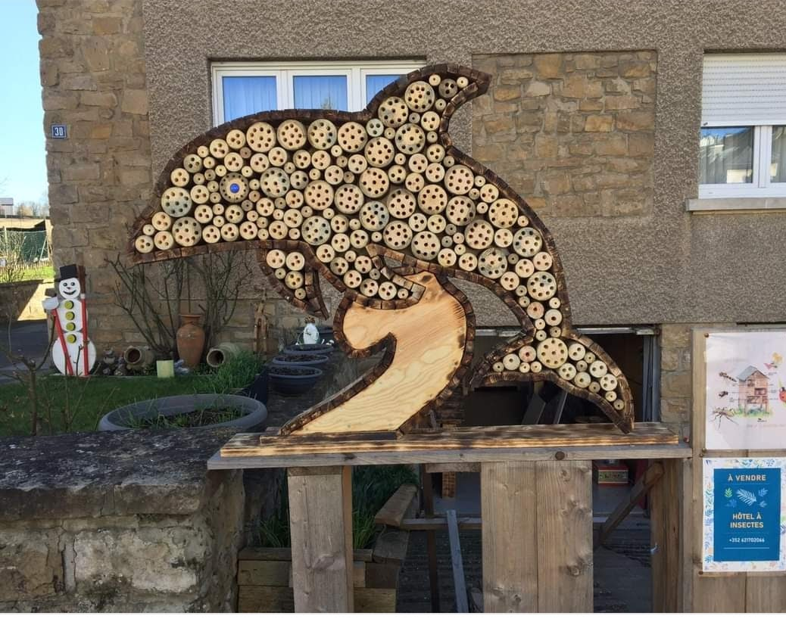
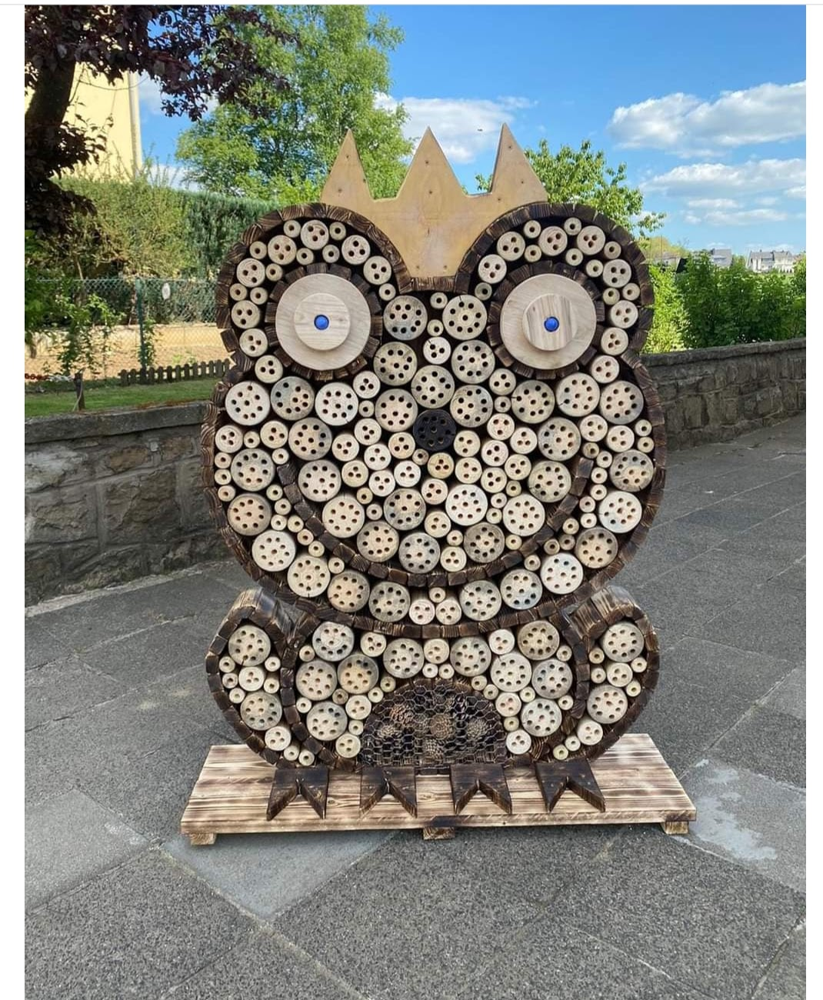
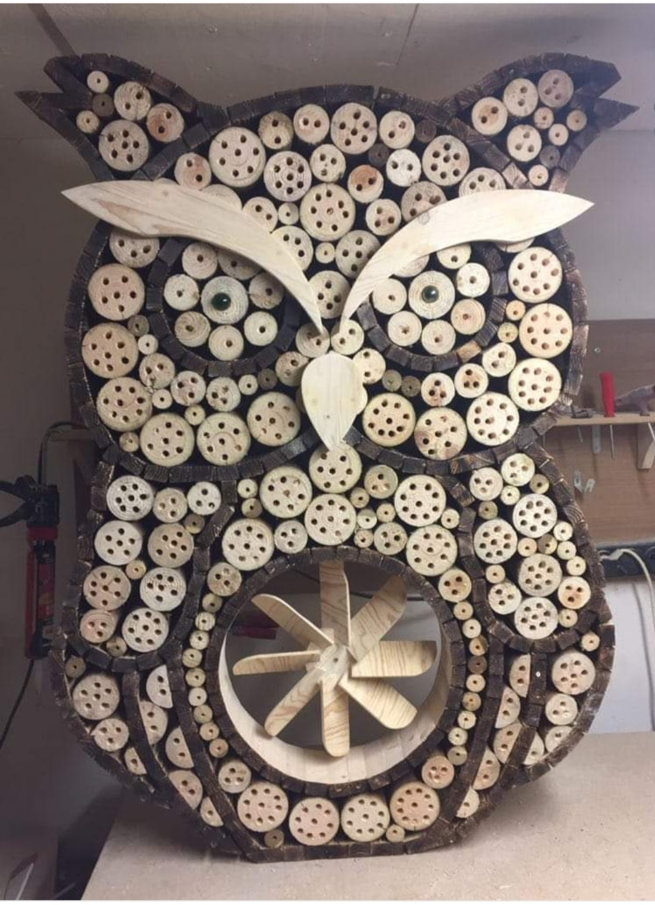

Art’Insect Habitat
Artesanato • Madeira • Natureza
Dedico-me à criação de peças artesanais, utilizando a madeira como matéria-prima principal e dando uma nova vida a materiais reciclados e reutilizados.
Desenvolvo trabalhos decorativos e utilitários, bem como projetos inspirados na natureza, como hotéis para insetos, procurando aliar criatividade, originalidade e funcionalidade.
Cada peça é criada com dedicação e cuidado, valorizando o trabalho manual, a reutilização de materiais e o respeito pelo ambiente.
As minhas criações
Peças decorativas
Trabalhos em madeira que dão carácter e calor a qualquer espaço.
Peças utilitárias
Objetos úteis para o dia a dia, feitos à mão e pensados para durar.
Hotéis para insetos
Abrigos inspirados na natureza para receber abelhas, joaninhas, etc., e ajudar na polinização das plantas.
Galeria








Peças únicas, feitas à mão, com respeito pela natureza.